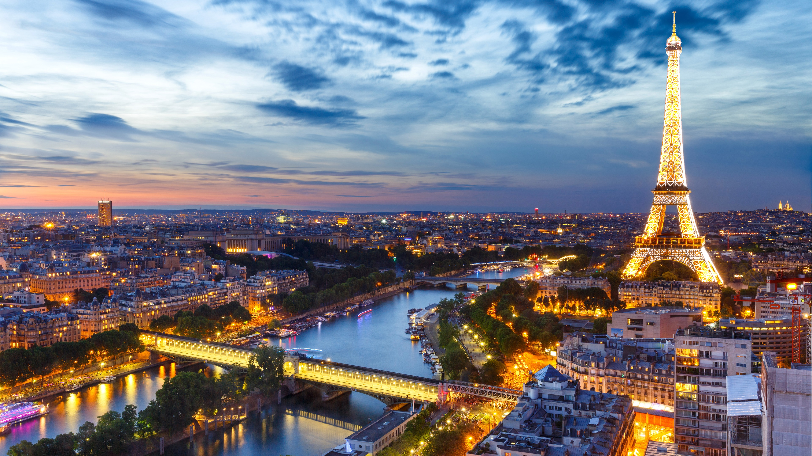

Paris is the capital of France and one of the most visited cities in the world, with a metro population of over 12 million people. Located along the River Seine, Paris is known for its art, fashion, cuisine, and historic landmarks.
Why Paris Qualifies as a City?
Paris is officially a commune and department, serving as the political, cultural, and economic heart of France. It has a dense population, a long history of urban development, and global influence in culture, design, and diplomacy.
What Advanced Facilities and Infrastructure are Available?
Paris has an extensive metro system with 308 stations, known for its efficiency and iconic Art Nouveau entrances. The city is served by major international airports including Charles de Gaulle, one of Europe's busiest. Paris also features high-speed TGV rail lines, advanced museums, and world-leading fashion and design institutions.

Paris Fun Facts!
The Eiffel Tower was originally intended to be dismantled after 20 years. Paris has more than 1,800 bakeries, many famous for traditional baguettes. The Louvre is the largest art museum in the world and home to the Mona Lisa.